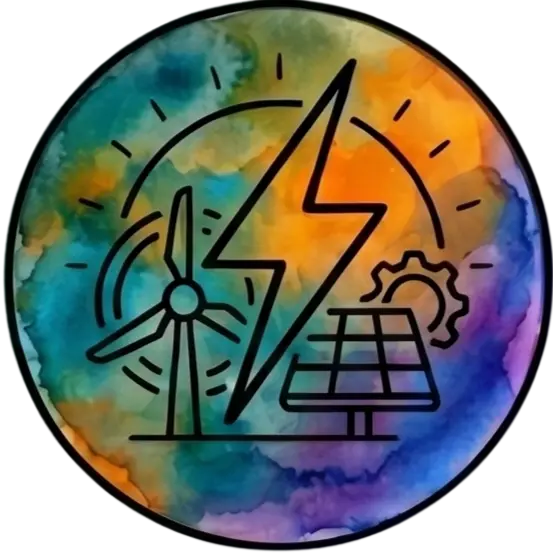
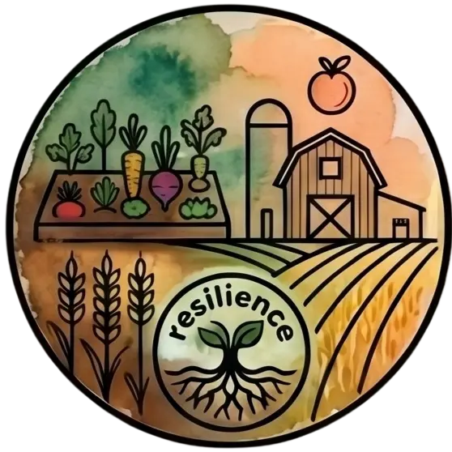
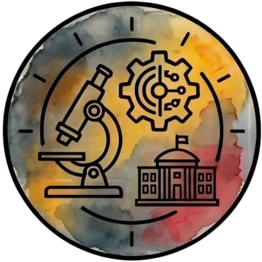
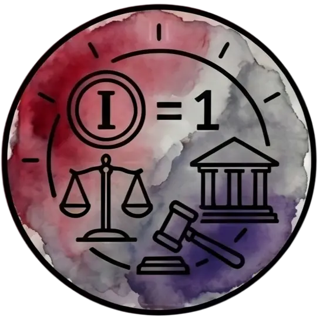
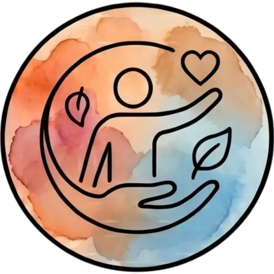
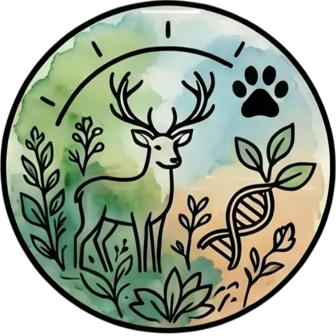

Comprendre avant de conclure.
L’association ne vise pas à juger ou convaincre : elle vise à documenter factuellement ce qui est, afin que chacun puisse décider librement.[cite: 1, 3]

Énergies & Transports
Consulter l'audit

Agriculture & Résilience
Consulter l'audit

Santé & Environnement
Consulter l'audit
Économie & Finance
Consulter l'audit
L'Écosystème
Découvrir la Charte[cite: 1]
Médias & Numérique[cite: 3]
Consulter l'audit[cite: 3]

Démocratie & Institutions[cite: 3]
Consulter l'audit[cite: 3]

Organisations Publiques & Privées[cite: 3]
Consulter l'audit[cite: 3]

Préservation du Vivant & GÉT
Lancer un nouvel audit[cite: 3]
Les audits des citoyens lambda